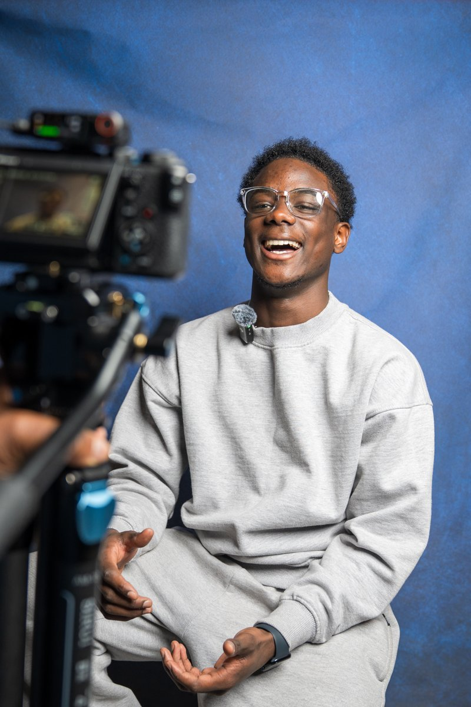

Community and Creativity
Work is only part of who I am, because I care about the people around me and I love making things, and this page is about both. I mentor students, I show up for my campus, and I play drums, make music and films, and cook, and I do these things because I love them and they've taught me as much as any job.
Community and Leadership
Youth Mentoring
It started in my junior year, when my counselors asked me to mentor a Black middle schooler at Worcester Academy. Through afterschool tutoring, basketball coaching, and the occasional lunch at the Taco Spot, I gave him the support I needed as an underclassman with no one to confide in. Today I run my own mentoring initiative for first-generation and low-income students, because I know what a difference it makes when someone shows you the way.
At any time, I'm working with more than 50 students through group webinars and with 20+ of them one-on-one, and I adjust to each student's pace. Every student needs to hear something different, which is a big reason psychology interests me. I built the curriculum for our financial literacy and career exploration sessions, and I run them in person and online for youth in the U.S. and Africa.
I also help families with college applications, scholarships, and choosing a major, and I connect students to programs like QuestBridge and Thrive so more of them make it to enrollment. I'm a QuestBridge Scholar myself, so this one is personal, and I'm now planning to grow the work into a nonprofit called Project Access. The gaps in access I saw at the Mosakowski Institute are also why public policy interests me.
Campus Involvement
On campus, I stay close to community, and the Ghanaian Students Association at Cornell feels like a piece of home. This summer, I worked full-time as a resident advisor for Cornell's Pre-Collegiate Summer Scholars Program, where I mentored the students and handled the day-to-day work that keeps a residential program on schedule. Since July, I've also been an Adobe Student Ambassador, where I use storytelling and project planning outside of class.
Creative Interests
Music
Music is a big part of my life, and I'm vice president on the executive board of Sounds of Spirit, a Christian worship group at Cornell, where I play drums, produce music, and lead worship. I play at my church back home too. It started in the back of a sanctuary, where I thumped rhythms on the seat in front of me every Sunday, and then at home, where I tapped a pencil on my mom's mahogany desk to learn the polyrhythms of Ghanaian praise songs. The pencil became a pair of 5a drumsticks, the desk became a mesh kit in the corner of my mom's room, and a computer chair with no backrest became my throne.

In July 2022, the main drummer was absent and I filled in for an all-night prayer service, and because I had prepared, I earned more chances until I joined the rotation for Sunday services. I also plan our live events, and for one that meant building a 7 to 9 p.m. program with set segments, lining up a guest speaker from New York, and planning an intermission. We've played board games at intermission, and I've been looking at Kahoot with a prize for the winner, which feels a lot like launching a small product and is fun for me.
One of my favorite songs, Hymn Melody by Onn Gospel, starts with calm harmonies and adds cymbal swells until it erupts into a symphony, and it mirrors my life now.
Cinematic Videography

I also make films, because cinematic videography lets me tell stories with a camera the way I tell them with words, and it says what words sometimes can't. Writing is the skill I trust most, and film uses the same instincts, finding the scene that carries the story and letting the details do the work. Psychology feeds it too, since a good scene and a good pitch both depend on knowing what people feel.
The project closest to my heart is the documentary I made for my senior project on Ghanaian church music, and it's me saying out loud something I once kept quiet, that where I come from is worth celebrating. I grew up in those services, thumping rhythms on the seat in front of me every Sunday, so the subject was never far from me.
Now I use those skills in other places too. As an Adobe Student Ambassador, I plan projects and tell stories outside of class, and on the Cornell Consulting restaurant project, I help shape the brand story for a business that is just starting out.
More About Me
Since you made it this far, one last thing. I've babysat for more than five years, for both of my sisters and for other families. As the oldest, I've also been their chef, tutor, chauffeur, and occasional hair-braider. Cooking is a habit from my mom's kitchen, and it's one I still enjoy. That work is some of the most real I've done, and it keeps me grounded.
If you'd like to say hello, feel free to email me with the address at the bottom of this page.
Back to My Story